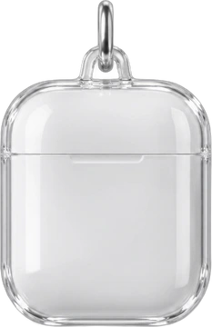
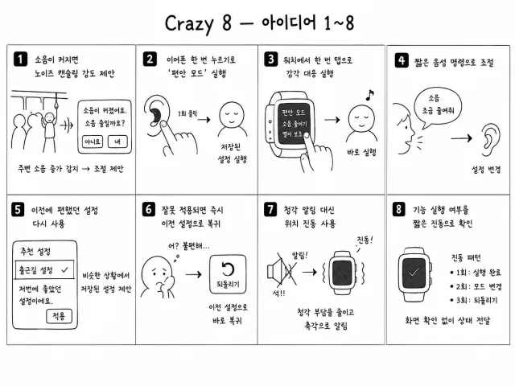
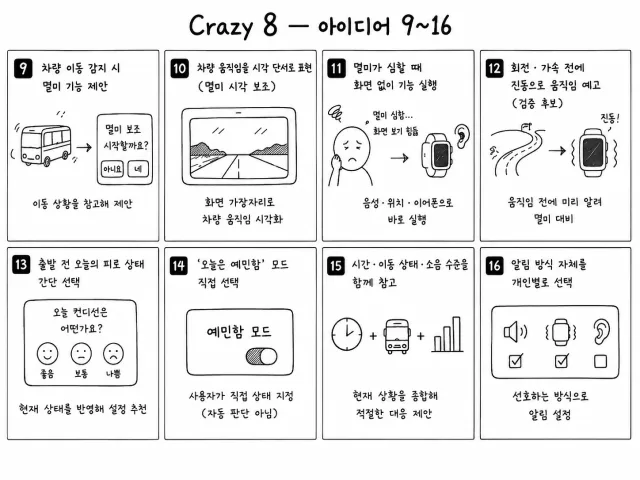
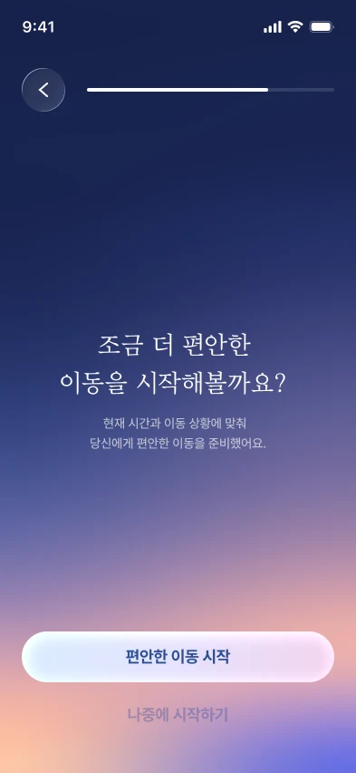
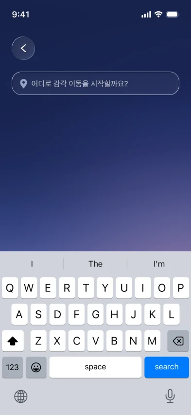
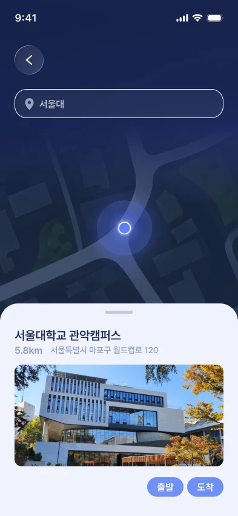
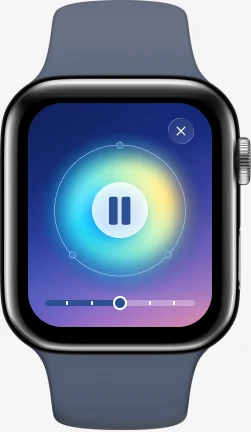
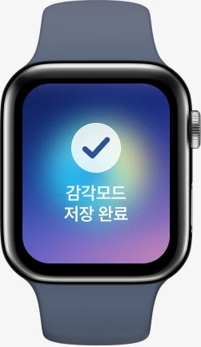

피할 수 없는 순간에도,
할 수 있는 대응을 찾습니다.
만원 버스, 업무 중인 자리, 옆집 소음처럼 바로 벗어나거나 바꾸기 어려운 곳에서 감각 부담이 생기면 할 수 있는 일이 금방 줄어듭니다. 지금 가능한 대응을 먼저 제안하고, 무언가를 바꾸기 전에는 꼭 묻는 워치·이어폰 에이전트를 기획했습니다.
지금 조금 힘드신가요?- 키워드
- 감각 부담 · 개인화 대응
- 기기
- 스마트워치 · 이어폰 · 폰
- 리서치
- 논문 13편 · 인터뷰 2명 · UT 5명
- 과정
- Double Diamond
01Overview
자극을 없애기보다,
지금 할 수 있는 방법을 연결합니다.
감각 부담은 사람마다 다르고, 같은 사람도 피로와 기분, 주변 환경에 따라 달라집니다.
특히 바로 벗어나기 어렵거나 주변을 직접 바꾸기 어려운 순간에는 쓸 수 있는 대응이 줄어듭니다.
기존 서비스는 기록, 체크인, 환경 확인처럼 한 단계씩만 도와서 사용자가 먼저 움직여야 합니다.
그래서 현재 상태와 상황을 함께 보고, 그 순간 가능한 대응을 이어 주는 흐름을 설계했습니다.
- STEP 01AI 상황 해석알아차리기
지금의 상태와 주변 자극을 함께 살펴봅니다.
- STEP 02사용자 선택대응 고르기
노이즈 캔슬링처럼 지금 가능한 방법을 제안하고,
적용은 사용자가 정합니다. - STEP 03사용자 확인다음에 반영하기
대응 후 나아졌는지 확인하고 다음 판단에 씁니다.
02Discover · Research
문제는 한 번의 자극보다,
매일 반복되는 대응이었습니다.
Research Question
특정 진단이 아니라, 일상 속 감각 부담과 각자의 대응을 봤습니다
소리 · 빛 · 냄새 · 촉감 · 사람 많은 공간처럼 일상에서 불편을 겪는 사람을 처음부터 유형으로 나누지 않았어요. 대신 다섯 가지를 함께 확인했습니다.
- 01어떤 자극과 상황에서 부담이 생기는가
- 02그때 사용자의 상태와 주변 환경은 어땠는가
- 03사용자는 실제로 어떻게 대응하는가
- 04대응한 뒤에도 무엇이 남는가
- 05기존 기술과 서비스는 어디까지 돕는가
Background
‘민감한 사람’과 ‘지금 과부하인 순간’은 다릅니다
Sensory Processing Sensitivity
환경 자극에 반응하는 정도의 개인차. 사람마다 다르게 타고난 성향이에요.
Greven et al. (2019)Overstimulation
지금의 자극 · 상태 · 환경 때문에 특정 순간에 생기는 부담. 피로 · 기분 · 시간대 · 주변 사람에 따라 달라져요.
Weyn et al. (2026)그래서 자극만이 아니라 그 순간의 상태와 환경을 함께 보기로 했고, 사용자를 ‘민감한 사람’으로 고정하지 않았습니다.
Process
8단계로 넓게 보고, 좁혀 갔습니다
- Secondary Research선행연구 · 기술 · 서비스 · 시장
- 커뮤니티 사례실제 상황과 대응 행동
- Self Elicitation한 경험을 깊게 돌아보기
- Survey패턴이 반복되는지 확인
- Co-design자동화 · 입력 · 되돌리기 탐색
- 분석코드 156 → 테마 7
- Define · Ideation문제 정의 · 아이디어 35개
- Product ConceptSENSE
Secondary Research
도와주는 기능은 이미 있었습니다. 다만 한 단계씩만 돕습니다
| 구분 | 사례 | 하는 일 | 남는 빈틈 |
|---|---|---|---|
| 연구 · 웨어러블 | MoodTurner | PPG · GPS로 상태 변화 기록 → 진동 알림 → 호흡 조절 | 개념 프로토타입. 감각 부담을 정확히 감지한다고 입증되지 않음 |
| OS 기능 | Reduce Motion · Reduce Loud Audio · Focus · Assistive Access | 화면 움직임 · 소리 · 알림 · 정보량을 직접 조절 | 감각 과부하 전용이 아님. 설정 메뉴 깊숙이 있어 그 순간 쓰기 어려움 |
| 서비스 | Anchor: Stimulus | 감각 상태 기록, 개인 패턴 확인 | 기록은 남지만 그 순간의 대응은 따로 |
| 서비스 | NeuroAdapt ZONE | 상태 Check-in, 대응 전략 | 체크인 후 실행은 사용자가 직접 |
| 서비스 | overstimulated | 저자극 UI, 호흡 · 집중 | 앱을 열어 화면을 봐야 시작 |
| 서비스 | HushMap | 장소의 감각 환경 확인 | 사전 확인만, 현장 대응은 없음 |
기록 · 체크인 · 자기조절 · 환경 확인이 각각 따로 있어서, 사용자가 먼저 앱을 열고 움직여야 합니다. 그래서 “감각 부담을 돕는 기능이 없다”가 아니라, 기존 대응 뒤에도 무엇이 남는가를 묻기로 했습니다. 감각 부담만 따로 집계한 시장 자료는 부족해 Mental Health App 시장을 인접 자료로만 참고했어요.
Community Cases
상황 → 자극 → 상태 → 대응 → 결과 순서로 사례를 읽었습니다
대화 · 음악 · 안내방송 · 반복 소음 · 알림
향수 · 담배 · 체취 · 빨래 냄새
만원 지하철 · 마트 · 백화점
강한 빛 · 조명
특정 소재, 피부 자극
여러 자극이 한꺼번에
| 이 상황에서 | 사람들이 한 대응 | |
|---|---|---|
| 미리 피할 수 있음 | 덜 붐비는 시간 · 장소 고르기, 미리 준비 | |
| 피하기 어렵지만 줄일 수 있음 | 이어폰 · 노이즈 캔슬링 · 선글라스 · 설정 조절 | |
| 자리를 옮기거나 쉴 수 있음 | 자리 이동 · 잠시 쉬기 · 이탈 | |
| 피하지도, 줄이지도 못함 | 버티기 · 불편함 표현 · 도움 요청 |
막대는 쓸 수 있는 대응의 폭을 뜻해요. 자극의 종류보다 그 상황에서 무엇을 바꿀 수 있는가가 대응을 결정했습니다.
“한 번의 큰 자극보다 이런 과정이 매일 이어진다는 점이 더 피곤해요.”
참여자 1 · 셀프 일리시테이션 인터뷰
“도움 요청처럼 다른 사람과 연결되는 건 자동으로 하지 않았으면 좋겠어요. 얼마나 심각한지 제가 먼저 판단하고 싶어요.”
참여자 2 · 코디자인 인터뷰
Primary Research
인터뷰와 코디자인에서 구체화된 7가지
- 노이즈 캔슬링도움은 되지만, 강하거나 오래 쓰면 오히려 불편하다
- 화면 조작혼잡하거나 멀미가 날 때는 휴대폰 화면을 보기 어렵다
- 자동 실행받아들이는 정도가 기능마다 다르다
- 되돌리기잘못 적용된 설정은 바로 고치거나 되돌릴 수 있어야 한다
- 알림 피로반복되는 알림과 질문은 새로운 부담이 된다
- 재사용예전에 편했던 설정을 다시 쓰고 싶다
- 생체 데이터심박 · HRV는 판정이 아니라 참고 정보여야 한다
03Define
156개의 말을 7개 주제로 묶자,
피할 수 없는 순간이 남았습니다.
Affinity Mapping
비슷한 말끼리 붙여 보니, 7개의 덩어리가 생겼습니다
포스트잇은 코드에서 대표적인 것만 사용자 말투로 옮겼어요. 실제로는 156개 코드를 17개 그룹으로 묶은 뒤 7개 Theme로 올렸습니다.
Journey by Situation
같은 사람도, 상황에 따라 쓸 수 있는 대응이 줄어듭니다
대응이 달라지는 세 가지 상황
- 피할 수 있음
시간·장소를 바꾸거나 미리 피해요.
이미 스스로 해결 - 피하기 어렵지만 일부 조절 가능
이어폰, 노이즈 캔슬링, 마스크로 줄여요.
기존 기기로 일부 해결 - 피하기도, 줄이기도 어려움
버티기, 자리 이동, 도움 요청만 남아요. 혼잡하거나 멀미가 나면 휴대폰 화면 조작도 어렵습니다.
Main Pain Point
Problem Statement
피하기 어려운 상황에서 감각 부담이 생기면, 필요한 대응을 즉시 실행하기 어렵고 대응 후에도 불편함이 남을 수 있다.
How Might We
어떻게 하면 최소한의 조작으로 필요한 감각 대응을 빠르게 실행하고, 남은 불편에 맞춰 추가 조절까지 이어갈 수 있을까?
7개 Theme에서 디자인 원칙으로
| 사용자에게서 확인한 것 | 그래서 정한 원칙 |
|---|---|
| 혼잡도에 따라 쓸 수 있는 인터랙션이 달라진다 | 화면 대신 이어폰 · 워치 · 음성으로 한 번에 실행 |
| 자동화를 받아들이는 정도는 기능마다 다르다 | 자동 실행 · 빠른 승인 · 직접 선택, 기능별로 나눔 |
| 잘못 적용된 설정은 바로 고칠 수 있어야 한다 | 모든 대응에 즉시 되돌리기 |
| 반복 알림과 질문은 또 다른 부담이 된다 | 필요한 순간에만, 한 번만 제안 |
| 이전에 편했던 설정을 다시 쓰고 싶다 | 개인 설정 저장 · 비슷한 상황에서 재사용 |
| 심박·HRV로 감각 부담을 확정할 수 없다 | 생체 데이터는 판정이 아니라 참고 정보로만 |
Themes
7개 Theme
- 감각 부담은 자극뿐 아니라 현재 상태와 반복 노출에 따라 달라질 수 있다
- 먼저 준비하거나 피하고, 피하기 어려우면 현장 대응이나 버티기로 전환한다
- 기존 대응은 도움을 주지만, 사용 자체의 불편과 남는 부담도 있다
- 혼잡 정도에 따라 화면 · 음성 · 워치 등 쓸 수 있는 인터랙션이 달라진다
- 자동화 수용 정도는 기능과 상황마다 다르며, 취소 · 되돌리기가 중요하다
- 반복 알림 · 질문 · 피드백은 새로운 부담이 될 수 있다
- 기존 지원은 기록 · 사전 확인 · 개별 조절 · 자기조절로 나뉘어 제공된다
User Story
“피하기 어려운 순간에도 최소한의 조작으로 대응을 시작하고, 불편이 남으면 이어서 조절하고 싶다.”
‘대응 방법을 고르는 과정 자체가 힘들다’는 가설은 핵심 문제로 확정하지 않고, 테스트에서 실제로 반복되는지 확인할 항목으로 남겼습니다.
Persona
리서치와 테스트 참여자를 묶어 만든 한 사람
버스 + 지하철 출퇴근 · 주 5회
이어폰은 늘, 워치는 가끔
“한 번의 큰 자극보다 이런 과정이 매일 이어진다는 게 더 피곤해요.”
하루의 장면
아침 만원 버스. 안내방송과 대화 소리가 겹치고, 흔들리는 차 안에서 휴대폰을 꺼내 설정을 찾기 어렵다. 노이즈 캔슬링을 최대로 켜 두면 30분쯤 지나 머리가 먹먹해진다.
목표
- 도착할 때까지 덜 지친 상태로 가기
- 불편할 때 바로, 손이 덜 가게 대응하기
지금 하는 대응
- 덜 붐비는 시간 고르기
- 이어폰 꽂고 버티기
- 심하면 한 정거장 먼저 내리기
불편한 점
- 혼잡 · 멀미 중엔 화면 조작이 어렵다
- 노이즈 캔슬링이 세거나 오래 쓰면 답답
- 매번 처음부터 다시 맞춘다
바라는 점
- 예전에 편했던 설정을 그대로
- 바꾸기 전에는 먼저 물어봐 주기
- 얼마나 심각한지는 내가 판단
인터뷰 · 커뮤니티 사례와 UT 참여자(20~30대 · 출퇴근 · 소리 불편 · 이어폰 사용) 공통점을 묶은 가상의 인물이에요.
04Develop · Ideation
35개 아이디어 중,
화면을 보지 않아도 되는 것부터 골랐습니다.
Value Proposition Canvas
가치제안 캔버스
사용자가 이동 중에 하려는 일, 불편한 점, 바라는 점을 정리하고 서비스 기능과 하나씩 연결했어요. 사용자는 불편한 순간에 바로 대응하고 싶지만, 혼잡하거나 멀미가 나면 화면을 보기 어렵고, 매번 처음부터 설정해야 했습니다.
- 1
혼잡 · 멀미로 화면을 보기 어려움
→워치 · 이어폰 한 번 실행 - 2
대응이 세거나 맞지 않음
→강도 조절 · 즉시 되돌리기 - 3
매번 처음부터 다시 설정
→감각 저장 · 다음 이동 추천
Crazy 8
질문 하나에 8칸, 손으로 빠르게 그렸습니다



Idea Sketch
35개 아이디어를 11개 방향으로 나눠 스케치했어요


A 감각 자체 조절 · B 현재 상태 반영 · C 과거 경험 활용 · D 화면 없이 조작 · E 즉시 탈출 · F 1차 대응 이후 · G 다른 감각으로 전달 · H 여러 기기 · I 잠깐 벗어나기 · J 멀미 특화 · K 상황 미리 준비. 이미지를 누르면 크게 볼 수 있어요.
Priority Matrix
아이디어 2×2 우선순위 매트릭스
X축 구현 가능성: 지금의 스마트폰 · 이어폰 · 워치 기술로 만들 수 있는지
Y축 힘든 순간의 사용 편의성: 혼잡하거나 멀미가 날 때 화면을 많이 보지 않고 쓸 수 있는지
최우선 10
- 02이어폰 한 번 누르기
- 03워치 한 번 탭
- 04짧은 음성 명령
- 05이전 설정 재사용
- 06즉시 되돌리기
- 07청각 알림 → 진동
- 08실행 상태 진동 확인
- 11멀미 때 화면 없이 실행
- 18필요한 순간에만 한 번 제안
- 19일정 시간 개입 중지
우선 검증 2
- 12차량 움직임 전 진동
- 17상황 따라 화면 의존도 자동 감소
보조 기능 6
- 01소음 증가 시 조절 제안
- 09차량 이동 시 멀미 기능 제안
- 10차량 움직임 시각 단서
- 13피로 상태 직접 입력
- 16알림 방식 개인 설정
- 20청각 · 멀미 빠른 메뉴
후순위 2
- 14“오늘은 예민함” 모드
- 15시간 · 이동 · 소음 종합 판단
최우선 10개는 대부분 화면을 보지 않는 입력과 확인이었어요. 이 중 이어폰 · 워치 실행, 즉시 되돌리기, 이전 설정 재사용을 프로토타입의 뼈대로 삼았습니다.
아이디어 35개 · 카테고리 11개 · 팀 투표
- 나의 감각 쌍둥이개인화 · 경험 재사용3
- 감각 탈출 제스처 (SOS)즉시 대응 · 사용자 통제3
- 감각 자동항법사전 예방 · 준비3
- 감각 버블직접 감각 조절2
- 감각 날씨상태 인지2
- 회복 경로 기억후속 조절2
- 몸이 컨트롤러최소 입력2
표가 한 기능에 몰리지 않았어요. 사전 준비 · 즉시 대응 · 개인화 · 후속 조절이 고르게 지지돼, 하나의 기능이 아니라 하나의 흐름으로 묶기로 했습니다.
SENSE — 감각을 알아차리고 조절하는 이동 지원 서비스
- 이동 전감각 자동항법
경로와 내 설정으로 미리 준비
- 부담 발생SOS 제스처
화면 없이 바로 시작
- 감각별 대응감각 버블 · 멀미 비시각 모드
청각은 소리 조절, 멀미는 음성 · 진동 안내
- 효과 확인후속 조절
유지 · 추가 조절 · 되돌리기 · 종료
일부러 만들지 않은 것: 감각 과부하 자동 판정, 감정 · 피로 자동 추정, 특정 사람 목소리만 제거. 사용자가 원하지 않았거나 지금 기술로 정확하다고 말할 수 없었어요.
User Flow
유저 플로우
이동 전부터 다음 이동까지, 사용자가 판단하는 지점(◇)을 기준으로 흐름을 나눴어요. 보라 선은 사용자가 직접 고르는 길입니다.
Information Architecture
6개 메뉴, 감각 대응은 가운데 SENSE 탭 하나로
- 서비스 소개
- 불편 상황 선택
- 감각 패턴 확인
- 기기 연결
- 권한 설정
- 온보딩 완료
- 맞춤 케어 준비
- 준비 설정 보기
- 이동 경로 직접 설정
- 감각 패턴 요약
- 나의 감각 요약
- 최근 기록
- 감각 패턴
- 시간대별 민감도
- 상황별 감각 부담
- 효과 있었던 대응
- 청각 모드
- 멀미 모드
- 안정 모드
- SOS 실행하기
- 저장된 케어
- 출근 케어
- 버스 이동 케어
- 혼잡 공간 케어
- 내 케어 만들기
- 프로필
- 내 정보
- 프로필 편집
- 알림 설정
- 데이터 및 개인정보
- 기록 관리
- 데이터 사용 설정
- 개인정보 보호
- 서비스
- 도움말
- 의견 보내기
- 앱 정보
불편한 순간에 바로 쓰는 기능(청각 · 멀미 · 안정 모드, SOS)은 SENSE 탭 한 곳에 모으고, 기록 · 내 케어처럼 평소에 보는 기능과 나눴어요. 홈의 ‘맞춤 케어 준비’가 이동 전 준비(감각 자동항법)의 입구입니다.
Prototype
폰 15장 · 워치 4장, 이동 전부터 다음 이동까지 한 흐름으로
온보딩
모드 이름 옆에 한 줄 설명과 색 구슬을 붙여, 이름만으로 헷갈리지 않게 했어요. 기기가 없어도 “아니요, 없어요”로 넘어갈 수 있어요.



목적지 · 장소
일반 지도 앱과 같은 흐름이라 처음 써도 막히지 않게 했어요. UT에서 경로 작업은 5명 모두 성공했어요.




경로 · 감각 정보
시간뿐 아니라 구간마다 소음 · 혼잡 수준을 칩으로 보여주고, 감각 수준 화면에서 정류장별 부담을 막대로 비교해요. 여기서 ‘감각 저장’을 눌러 다음 추천으로 이어집니다.


감각 모드
화면을 오래 보지 않아도 되도록 버튼은 일시정지 하나, 강도는 아래 바 하나만 두었어요. 색 구슬이 모드마다 달라져 지금 켜진 모드를 한눈에 알 수 있어요.


워치에서 바로
혼잡해서 폰을 꺼내기 어려울 때를 위해 워치만으로 실행 → 조절 → 저장까지 끝나요.




다음 이동 추천
저장한 감각 정보로 자주 가는 경로 · 시간대에 맞춰 모드를 미리 추천해요. UT에서 이 화면의 추천 근거가 안 보인다는 문제가 나왔어요.

Scope
모든 감각이 아니라, 근거가 있는 두 감각에 집중했습니다
주변 소음 부담과 노이즈 캔슬링 사용이 확인됨
- 노이즈 캔슬링 강도 조절
- 필요한 소리 유지 범위 조정
- 개인 설정 저장 · 재사용
- 실행 상태 확인 · 즉시 되돌리기
버스 이동 중 화면 자극, 멀미 시작 후 조작이 어려움
- 화면을 오래 보지 않는 실행 · 종료
- 차량 움직임을 보여주는 시각 단서
- 음성 · 진동 같은 비시각 안내
불편은 확인됐지만 냄새를 감지 · 제거하는 기술로 단정할 수 없어 별도 하드웨어 후보로 둠
문제 영역이 아니라 정보를 다른 감각으로 옮기는 통로
- 청각 알림 → 워치 진동
- 화면 안내 → 짧은 음성
Devices
그 순간 휴대폰을 꺼내기 어렵다는 점에서 출발했어요
주 역할 보조 역할
Automation
자동화는 한 번에 켜지 않고, 기능마다 세 단계로 나눴습니다
사용자가 미리 허용한 개인 기기 기능
예: 저장해 둔 노이즈 캔슬링 강도 적용상황에 따라 한 번 확인이 필요한 기능
예: “멀미 모드로 바꿀까요?” 한 번 묻기개인차가 크거나 사회적 판단이 필요한 행동
예: 도움 요청, 다른 사람과 연결세 단계 모두 잘못 적용되면 바로 되돌릴 수 있어야 하고, 알림과 질문은 필요한 순간에 한 번만 짧게 개입합니다. 코디자인 인터뷰의 “얼마나 심각한지 제가 먼저 판단하고 싶어요”가 이 구조의 근거예요.
05Deliver · Usability Test
쓰기는 쉬웠지만,
저장하고 다시 쓰는 순간에서 멈췄습니다.
- 참여자
- 5명
- 작업 성공률
- 80%
- 평균 SEQ
- 5.6/7
- 평균 SUS
- 81.5/100
20~30대 · 모두 이어폰 사용
이동 중 감각 불편 경험
15개 작업 중 12개 성공
부분 성공 2 · 실패 1
작업 직후 체감 난이도
7에 가까울수록 쉬움
최저 75 · 최고 87.5
일반적인 기준 평균 68
Think Aloud 방식, 1인 35~45분. 실제 소음 차단이나 멀미 완화 효과가 아니라, 모드와 감각 정보를 이해하고 고를 수 있는지를 봤습니다. 시안 단계라 5명 대상의 파일럿이며, 수치는 경향으로 읽어 주세요.
Participants
최근 한 달 안에 이동 중 감각 불편을 겪은 성인 5명
| 참여자 | 연령 | 이동 | 불편한 감각 | 기기 | HSP 평균 |
|---|---|---|---|---|---|
| P1 | 30대 | 출퇴근 · 주 3~5회 | 소리 | 이어폰 | 3.83 |
| P2 | 20대 | 운동 · 공부 · 매일 | 소리 | 이어폰 | 3.72 |
| P3 | 30대 | 이어폰 쓸 때 항상 · 주 3~5회 | 혼잡 | 이어폰 | 4.72 |
| P4 | 20대 | 외출 시 항상 · 주 3~5회 | 소리 | 이어폰 | 4.72 |
| P5 | 30대 | 출퇴근 · 주 3~5회 | 소리 | 이어폰 | 4.44 |
연령
불편한 감각
이동 빈도
가진 기기
HSP와 SUS의 관계
민감 성향이 높다고 SUS가 높거나 낮지 않았어요. 같은 HSP 4.72인 P3와 P4도 5점 차이가 났습니다. 5명이라 상관을 말할 수는 없고, 민감도보다 작업에서 막힌 지점이 점수 차이를 더 잘 설명했어요.
진단명이나 HSP 점수는 참여 기준으로 쓰지 않았어요. HSP는 동의한 사람만, 모든 평가가 끝난 뒤 성향 참고용으로 받았고 사용성 점수와 합산하지 않았습니다.
Tasks
작업마다 성공 기준을 미리 정했어요
| 작업 | 성공 2점 | 부분 성공 1점 | 실패 0점 |
|---|---|---|---|
| 01 경로 선택 | 도움 없이 경로를 고르고 참고한 정보를 설명 | 도움 · 재질문 후 완료 | 작동하는 화면에서 완료하지 못함 |
| 02 모드 사용 | 모드를 실행 · 조절하고 의미를 자기 말로 설명 | 안내 후 주요 조작 완료 | 조작을 마치지 못하거나 의미를 설명하기 어려움 |
| 03 감각 저장 · 다음 추천 | 저장하고 추천 내용을 설명 | 도움 후 저장 · 일부만 설명 | 저장하지 못하고 종료 |
SEQ는 작업 직후 참여자가 직접 1~7점으로, SUS는 모든 작업이 끝난 뒤 10문항으로 받았어요. 미구현 기능이나 참여자가 그만둔 작업은 실패로 세지 않았습니다.
작업별 결과
성공부분 성공실패참여자별 SEQ01경로 선택
02모드 사용
03감각 저장 · 다음 추천
앞의 두 작업은 모두 성공했고 SEQ 6.6이었어요. 작업 3만 SEQ가 3.6으로 3점 낮아지고 참여자 간 차이가 1~7점으로 크게 벌어졌습니다. 문제는 한 작업에 몰려 있었어요.
참여자별 SUS
작업 3에서 실패한 P3도 SUS는 82.5였어요. 전체 인상은 좋아도 특정 단계에서 막힐 수 있어서, 점수 하나보다 작업별 기록을 함께 봐야 했습니다.
SUS 문항별 점수 (문항당 0~4, 높을수록 긍정)
- 번거롭지 않다3.8
- 배울 게 많지 않다3.8
- 쉽게 배울 수 있다3.6
- 기술 지원이 필요 없다3.6
- 사용할 때 자신감이 있다3.4
- 복잡하지 않다3.4
- 사용하기 쉽다3.2
- 기능이 잘 통합되어 있다2.8
- 불일치·혼동이 없다2.8
- 자주 사용하고 싶다2.2
‘쉽다’는 문항은 높고, 통합 · 일관성 · 재사용 의향이 가장 낮았어요. 저장한 정보가 다음 추천으로 이어지는 흐름이 끊겨 보인다는 작업 3의 결과와 같은 이야기입니다.
Raw Observations
작업 3에서 각자 어디서 멈췄는지
경로를 고른 뒤 ‘경로 저장’ 버튼을 보지 못하고 “종료했어요.”라며 과제를 끝냄
감각 저장이 무슨 기능인지 화면을 살피며 고민. 저장 뒤 추천 코스가 무엇이고 어떤 기준인지 질문
화면 하단을 한 번 더 확인한 뒤에야 버튼을 누름. 위치 · 기능이 바로 보이지 않음
완료했지만 출발지 · 도착지와 소요 시간 표시를 바로 이해하지 못한 모습
“설정을 저장해 다음에 추천으로 보여주는 게 편리하다”
실패와 부분 성공 3명 모두 저장 버튼을 찾는 것 또는 추천의 이유를 이해하는 것에서 막혔어요. 기능을 원하지 않은 게 아니라 연결이 보이지 않았던 거예요.
문제의 심각도 × 겪은 사람 수
오른쪽 위일수록 먼저 고칠 것‘모드 이름’은 가장 많은 사람이 겪었지만 작업은 모두 성공했어요. 반대로 ‘저장’은 2명뿐이어도 실패와 부분 성공을 만들었기 때문에, 수는 적어도 먼저 고칠 문제로 정했습니다.
발견한 문제와 다음 수정
| 심각도 | 관찰 | 근거 | 수정 방향 |
|---|---|---|---|
| 높음 | ‘경로 저장’ 버튼을 지나쳐 저장하지 않고 과제를 끝냄 | P3 실패 · “종료했어요.” P2 하단을 다시 확인 후 망설임 | 저장 버튼을 하단 고정 · 주요 버튼으로 강조, 저장 완료 상태 표시 |
| 높음 | 저장 후 나온 추천이 왜, 무엇을 기준으로 나왔는지 모름 | P1 부분 성공 · 추천 기준을 직접 질문 | 추천 카드에 “자주 가는 경로 · 시간대 기준” 근거 한 줄 노출 |
| 중간 | 조절 바가 무엇을 조절하는지 한눈에 모름 | P1 “여기 바가 조절하는 건가요?” P4 같은 의견 | 바 양끝에 단위 · 라벨(주변 소리 ↔ 음악) 표시 |
| 중간 | 모드 이름만으로 기능을 구분하기 어려움 | P2 “안정 모드가 무엇인가요?” P4 · P5 모드 차이가 뚜렷하지 않음 | 모드마다 언제 쓰는지 한 줄 설명 · 예시 소리 미리 듣기 |
| 낮음 | 모드를 여러 개 고를 수 있는지 헷갈림 | P3 다중 선택 시도 3회 | 단일 / 복수 선택을 선택 UI로 구분 |
| 낮음 | 일반 지도 · 모빌리티 앱으로 오해 | P5 · 경로 작업은 익숙해서 빠름 | 경로 결과에서 소음 · 혼잡 정보를 먼저 보이게 |
멀미 모드에서 화면 대신 소리와 워치 진동으로 알려주는 게 좋았어요.
P5 · 관찰 메모 정리
감각 설정을 저장해 두면 다음에 추천 모드로 보여주는 게 편리해요.
P5 · 관찰 메모 정리
다음 테스트는 이렇게 바꿨어요
경로 선택 → 모드 사용 → 저장 · 추천
조작 성공 위주로 기록
모드 이해 · 선택 → 장소 선택 → 경로 확인 · 저장 → 모드 · 추천 이해
감각 정보가 선택을 바꿨는지를 따로 기록 · 모드 이름만 보고 떠올린 뜻부터 묻기
파일럿에서 문제가 모드 ‘이해’와 저장 이후 ‘연결’에 있었기 때문에, 다음 테스트는 조작보다 이해와 선택의 이유를 묻도록 다시 설계했습니다. 실제 소음 차단 · 멀미 완화 효과는 이번 범위에서 검증하지 않았습니다.
06Review
이해시키는 건 통했고,
다시 쓰게 만드는 건 다음 과제입니다.
확인한 것
- 모빌리티 앱과 비슷한 화면 구조라 경로 · 모드 진입은 5명 모두 성공했어요.
- 멀미 모드처럼 화면 대신 소리 · 진동으로 바꾸는 방식에 긍정적인 반응이 있었어요.
- SUS 81.5로, 처음 보는 감각 앱이어도 배우기 어렵지 않다는 응답이 많았어요.
아직 확인하지 못한 것
- 실제 효과: 소음 차단 · 멀미 완화는 시안에서 검증할 수 없었어요.
- 실제 맥락: 테스트는 책상 앞에서 이동을 떠올리는 방식이었어요. 흔들리는 버스 안에서는 결과가 다를 수 있어요.
- 표본: 5명 모두 20~30대 · 이어폰 사용자예요. 워치만 쓰거나 기기가 없는 사람은 없었어요.
- 재사용 의향: “자주 쓰고 싶다”가 가장 낮았어요. 한 번 쓰고 끝나지 않는 이유를 더 만들어야 해요.
Next
다음에 할 일
- STEP 01저장 → 추천 다시 설계
저장 버튼을 고정하고, 추천 카드에 “왜 이 모드인지” 근거를 붙여 수정한 4개 작업으로 다시 테스트해요.
- STEP 02이동 중 테스트
실제 대중교통에서 이어폰 한 번 누르기 · 워치 탭만으로 시작할 수 있는지 확인해요.
- STEP 03검증 후보 실험
차량 움직임 전 진동, 청각 알림 → 진동 전환이 실제로 부담을 줄이는지 따로 실험해요.
07Test Script
답을 알려주지 않도록,
화면마다 할 말을 정해 두었습니다.
진행 원칙: 참여자가 화면을 먼저 보게 하고, 버튼 위치나 정답은 알려주지 않아요. 감각 정보가 선택에 영향을 주지 않았다는 답도 그대로 기록합니다.
- 01
앱 시작
“시작하기를 눌러주세요.”
처음 어디를 보는지, 무엇을 위한 앱 같다고 말하는지
- 02
감각 모드 선택
“주변 소리나 흔들림 때문에 불편했던 경험을 떠올리고, 써 보고 싶은 모드를 하나 골라주세요.”
고른 모드와 이유, 세 모드를 어떻게 구분하는지 · 진행자가 먼저 기능을 설명하지 않음
- 03
기기 선택
“평소 가지고 다니는 기기가 있나요? 없다면 ‘아니요’를 골라도 괜찮아요.”
망설임, 기기 연결이 필수라고 오해하는지
- 04
이동 시작
“두 버튼을 누르면 각각 어디로 갈 것 같나요?”
누르기 전에 예상 결과를 먼저 묻기
- 05
장소 · 경로 감각 정보
“어떤 정보를 보고 골랐어요? 소리나 혼잡 정보가 눈에 들어왔나요?”
감각 정보를 알아봤는지 · 이해했는지 · 선택을 바꿨는지 · 먼저 ‘조용한 곳을 고르라’고 말하지 않음
- 06
청각 · 멀미 · 안정 모드 체험
모드마다 예시 소리를 들려주고 “어떤 느낌인지 말해주세요.”
청각: 잔잔한 음악 + 노이즈 캔슬링 기대 · 멀미: 알림음 + 음성 안내 · 안정: 자연 소리
- 07
조절 바
“바가 어떤 기능을 하는 것처럼 보이나요?”
시안에서는 작동하지 않으므로 ‘조절되는 것 같은 인상’만 확인
- 08
감각 정보 저장 · 자동 추천
“무엇을 저장했다고 생각하세요? 지금 화면은 무엇을 보여주나요?”
추천 근거(자주 가는 경로 · 시간대)를 먼저 알려주지 않고 이해를 묻기
Help Rules
도와줄 때도 기준을 정했어요
| 상황 | 진행자 행동 | 기록 |
|---|---|---|
| 10초 정도 말이 없을 때 | “지금 어떤 생각을 하고 있나요?”만 묻고 버튼 위치는 알려주지 않음 | 도움 횟수에 넣지 않음 |
| 기능의 의미를 물을 때 | 먼저 “어떤 기능일 것 같나요?”라고 되묻기 | 사용법을 알려주면 도움 1회 · 이후 성공은 부분 성공 |
| 기능이 작동하지 않거나 중단 요청 | 그대로 다음 작업으로 | 미구현 · 중단, 성공률 계산에서 제외 |